GeocarbPrecalibration.jl: a guided tour
The GEOCARBSULFvolc long-term carbon-cycle model in Julia: what it is, how to set it up and run it, and the evidence that it reproduces the original R/Fortran code.
This page is generated from
notebooks/tour.jlwith Literate.jl. This page shows the outputs of one run of the notebook, in full mode, on 2026-11-22 with GeocarbPrecalibration 0.1.0 at commitc29fe6d9f3plus uncommitted changes to 4 files, Julia 1.12.7 and 32 threads, on Windows. Levels B and C of Part 2 depend on what that machine had installed (section 2.2 says what ran). To run it yourself, download the notebook and follow Setup.
How to read this notebook
| if you are | read |
|---|---|
| new to the package | Setup and Part 1 |
| reviewing the software (for example for JOSS) | Setup, Part 1 and Part 2 |
| examining the port from R/Fortran to Julia | Part 2; section 2.1 says what "the same answer" means |
Contents
- Setup: installing, opening the notebook, checking this machine
- Part 1, the package and the model: 1.1 the science · 1.2 the package · 1.3 the model · 1.4 inputs · 1.5 a first run · 1.6 climate sensitivity · 1.7 failed steps · 1.8 options and supplemental experiments · 1.9 single-precision literals · 1.10 windows and % outbound · 1.11 a small precalibration · 1.12 its results · 1.13 going further
- Part 2, verification against the original code: 2.1 what "the same answer" means · 2.2 three levels of evidence · 2.3 the test suite · 2.4 level A · 2.5 level B · 2.6 level C · 2.7 verdict · 2.8 reproducibility record
Setup
Installing (once)
Julia. Install juliaup, the official Julia installer, then Julia 1.12:
- Windows:
winget install --name Julia --id 9NJNWW8PVKMN -e -s msstore - macOS and Linux:
curl -fsSL https://install.julialang.org | sh - then, in a new terminal:
juliaup add 1.12andjuliaup default 1.12
- Windows:
The repository.
git clone https://github.com/TrevorLax/GEOCARBSULF.gitand change into the new folder.The notebook environment. From the repository folder run
julia notebooks/setup.jl. It instantiates the package environment (used by the test cells), creates the separate notebook environment innotebooks/with the package, CairoMakie, IJulia and Literate, precompiles everything, installs a Jupyter kernel called GeocarbPrecalibration that starts Julia with all CPU threads, and writesnotebooks/GeocarbPrecalibration_tour.ipynb. The first run takes roughly 5 to 15 minutes, mostly precompiling CairoMakie.Opening the notebook. Any Jupyter front end works:
- JupyterLab, if you have it:
jupyter lab notebooks/GeocarbPrecalibration_tour.ipynb; - VS Code with the Jupyter extension: open the
.ipynbfile; - without either:
julia --project=notebooks -e "using IJulia; jupyterlab(dir=pwd())"(IJulia offers to install a private copy of Jupyter the first time).
Choose the kernel GeocarbPrecalibration and run the cells from top to bottom (in JupyterLab: Run → Run All Cells).
- JupyterLab, if you have it:
Optional, only for level C of Part 2 (a live run of the original code):
- R ≥ 4.1 (the comparison was last run with R 4.6.1), with the packages
lhs,CholWishartandabind(MASSships with R). In R:install.packages(c("lhs", "CholWishart", "abind")). - A Fortran compiler that R can use, to compile the original Fortran:
- Windows: Rtools matching your R version;
- macOS: the gfortran build linked from mac.r-project.org/tools;
- Linux: your distribution's
gfortranpackage (for examplesudo apt install gfortran r-base).
⚠️ CairoMakie is slow the first time. Loading CairoMakie and drawing the first figure can take several minutes in a fresh environment (Julia compiles the plotting code once, then caches it). Later figures, and later sessions, are fast. The first code cell below is the slow one; let it finish.
⚠️ Level C needs R and gfortran. Without R (with the packages above) and a Fortran compiler, or already compiled libraries in
legacy/fortran, the notebook skips level C and says why. Levels A and B never need R.
using GeocarbPrecalibration
using CairoMakie # loading a Makie backend also loads the package's plotting extension
include(joinpath(pkgdir(GeocarbPrecalibration), "notebooks", "tour_helpers.jl"))
set_tour_theme!()
julia_version_check()✅ Julia 1.12.7.
The helpers loaded above (notebooks/tour_helpers.jl) only present results: they run the test suite in subprocesses, load the repository's own comparison code, and draw tables and figures. None of them contains model code.
Settings
Edit and re-run this cell to change what the notebook does. FAST is the quick mode used by the automated test of this notebook (notebooks/test_notebook.jl).
FAST = get(ENV, "GEOCARB_NOTEBOOK_FAST", "false") == "true"
TEST_GROUPS = FAST ? ["constraints", "regression"] : DEFAULT_GROUPS # test groups run in Part 2
RUN_LEVEL_B = true # replay stored R exports, if this machine has any
RUN_LEVEL_C = :auto # :auto = run if R and a Fortran compiler are found; true or false to force
N_DRAWS = FAST ? 100 : 400 # random prior draws used in Part 1
println("quick mode: ", FAST, " · Julia threads: ", Threads.nthreads())quick mode: false · Julia threads: 32
This machine
What the notebook found. The last five rows decide whether levels B and C of Part 2 can run.
env = detect_environment()
environment_table(env)| found | needed for | |
|---|---|---|
| Julia | 1.12.7 | ≥ 1.10 required; 1.12 recommended |
| Threads | 32 | |
| Operating system | NT x86_64 | |
| GeocarbPrecalibration | 0.1.0 (commit c29fe6d) | |
| CairoMakie | 0.15.17 | |
| Rscript | C:\Program Files\R\R-4.6.1\bin\Rscript.exe | level C |
| R packages lhs, CholWishart, abind, MASS | ✔ | level C |
| Compiled legacy Fortran | run_geocarb.dll, run_geocarb_supp.dll | level C (either this or a compiler) |
| Fortran compiler | C:\rtools45\x86_64-w64-mingw32.static.posix\bin\gfortran.exe | level C |
| Stored R exports | ✔ from 2026-11-20 14:56 | level B |
Part 1: the package and the model
1.1 The science in brief
Over millions of years, the amount of CO₂ in the atmosphere is set by a slow balance. Volcanism and metamorphism release carbon from the solid Earth. Chemical weathering of silicate rocks on land removes it, and the carbon ends up buried in carbonate rocks and in organic matter in sediments. Weathering speeds up when the climate is warmer and wetter, so this balance acts as a thermostat: if CO₂ rises, the planet warms, weathering accelerates and draws CO₂ down again.
The GEOCARB family of models (Berner 2004, 2006, 2008; Royer et al. 2014) turns this idea into a budget of carbon and sulfur reservoirs from 570 million years ago (Ma) to the present, in 10-million-year steps. At each step the model solves for the CO₂ level at which weathering balances the carbon that must be removed. It also tracks atmospheric O₂ and isotope ratios.
One parameter, ΔT2x, is the warming per doubling of CO₂. Over these time scales it includes slow feedbacks such as ice sheets and vegetation, so it measures Earth-system sensitivity. Another, GLAC, scales it during glacial periods.
Precalibration (Wong et al. 2021, Nature Communications 12, 3173) asks which combinations of the uncertain parameters give model histories consistent with the geological record. It draws many parameter sets from their prior distributions, runs the model for each, and keeps those whose CO₂ and temperature stay inside observational windows (built from CO₂ proxies and a temperature reconstruction) often enough. The kept samples constrain ΔT2x.
1.2 What this package is
GeocarbPrecalibration.jl is a Julia port of the R/Fortran code of Wong et al. (2021) (GEOCARB-precalibration, by Tony Wong and Ying Cui). The original code is kept, unmodified, in legacy/ and is used as the test oracle in Part 2.
| layer | folder | what it does |
|---|---|---|
| parameters | src/parameters/ | named constants, forcings and model options |
| model | src/model/ | run_geocarb, a line-by-line port of run_geocarb.f90 |
| inputs | src/io/ | readers for the prior table, forcing arrays, proxies, temperatures |
| priors and samplers | src/priors/, src/sampling/ | truncated priors, Latin hypercube, inverse-Wishart forcing samples |
| constraints | src/constraints/ | CO₂ and temperature windows, % outbound |
| precalibration | src/precalibration/ | experiment files, acceptance rules, the chunked threaded engine |
| analysis and plots | src/analysis/, ext/ | the paper's summaries; figures with Makie |
Compared with the original:
- experiments are TOML files (
experiments/) instead of edited scripts; - model variants are options (
ModelOptions) instead of a second copy of the Fortran; - runs never crash on bad parameter values: every time step gets a status;
- ensembles are deterministic whatever the number of threads, and can be checkpointed;
- everything is tested, including against the original code (Part 2).
1.3 The model
A sketch of the carbon budget the model keeps (sulfur, oxygen and strontium are tracked alongside):
plot_carbon_cycle_schematic()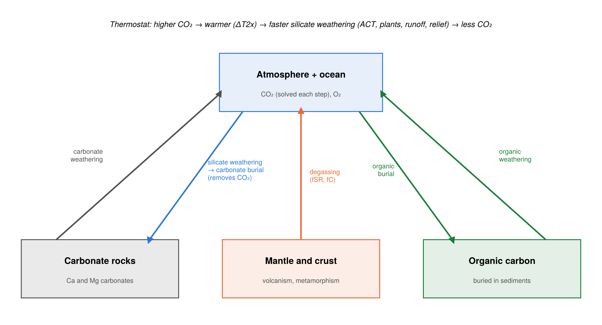
Each 10-million-year step runs these functions in order, each a direct port of a few lines of the Fortran:
| step | Julia function | run_geocarb.f90 lines |
|---|---|---|
| climate sensitivity factor (glacial intervals, optional ΔT2x ramp) | gcm_factor | 309–315 |
| effect of plants on weathering | vegetation_fE, carbonate_fBB | 319–359 |
| weathering and degassing fluxes | source_fluxes | 363–378 |
| isotope fractionation and burial | isotope_fractionations, burial_fluxes | 381–390 |
| weathering of volcanic rocks (Sr isotopes) | volcanic_weathering | 393–400 |
| atmospheric O₂ | update_oxygen | 403–405 |
| silicate weathering required by mass balance | silicate_weathering_no_climate | 416 |
| damped Newton solve for CO₂ | solve_rco2 | 431–521 |
| reservoir and isotope updates | update_reservoirs | 529–545 |
| outputs and failure checks | run_geocarb! | 547–566 |
1.4 Inputs
The model has 56 constant parameters and 12 time-varying forcings. Their priors come with the package, in data/. The prior file says which constants are calibrated (drawn from their prior) and which stay fixed at their mean; the table lists the calibrated ones of GEOCARB_input_summaries_calib_all.csv, the file used throughout.
table = read_prior_table(PRIOR_FILE)
tprior = read_time_arrays(ARRAY_FILE)
prior_table_html(table)The 56 calibrated constant parameters and their priors (click to expand)
| parameter | prior | mean | 2σ | bounds | units | meaning |
|---|---|---|---|---|---|---|
ACT | gaussian | 0.09 | 0.045 | [0, Inf] | 1/K | Activation energy for dissolution of Mg- and Ca-silicates on land (0.03 ≈ 20 kJ/mol; 0.08 ≈ 55 kJ/mol; Berner 2004 p. 28) |
ACTcarb | gaussian | 0.087 | 0.0435 | [0, Inf] | 1/K | Activation energy for dissolution of carbonates on land |
VNV | gaussian | 5 | 2.5 | [0, Inf] | - | Rate of chemical weathering in volcanic silicate rocks relative to non-volcanic silicate rocks |
NV | gaussian | 0.0075 | 0.00375 | [0, Inf] | - | Coefficient relating physical erosion to the mean 87Sr/86Sr of non-volcanic silicate rocks |
exp_NV | gaussian | 0.67 | 0.335 | [0, Inf] | - | Exponent relating physical erosion to the mean 87Sr/86Sr of non-volcanic silicate rocks |
LIFE | gaussian | 0.25 | 0.125 | [0, Inf] | - | Rate of chemical weathering in a minimally vegetated world relative to the present (angiosperm-dominated) world |
GYM | gaussian | 0.875 | 0.4156 | [0, Inf] | - | Rate of chemical weathering by gymnosperms relative to angiosperms |
FERT | gaussian | 0.4 | 0.2 | [0, 1] | - | Exponent for the fraction of vegetation whose growth is stimulated by CO2, in [2RCO2/(1+RCO2)]^FERT |
exp_fnBb | gaussian | 0.5 | 0.125 | [0, Inf] | - | Exponent for the effect of climate on silicate or carbonate weathering in the absence of vascular plants |
deltaT2X | lognormal | 3 | 2.5 | [1.5, Inf] | °C | Climate sensitivity (warming per CO2 doubling); deltaT2X = GCM·ln(2) |
GLAC | gaussian | 2 | 1 | [1, Inf] | - | Factor by which deltaT2X changes during times with large continental ice sheets |
J | gaussian | 4 | 2 | [0, Inf] | per mil | Coefficient in CAPd13C = CAPd13C_0 + J·(O2/38 − 1) |
n | gaussian | 1 | 0.5 | [0, Inf] | - | Exponent in CAPd34S = CAPd34S_0·(O2/38)^n |
Ws | gaussian | 7.4 | 3.7 | [-Inf, Inf] | °C | Effect on temperature of the linear increase in solar luminosity over time |
exp_fD | gaussian | 0.65 | 0.325 | [0, Inf] | - | Exponent that scales the dilution of dissolved HCO3- with runoff (fD) |
Fwpa_0 | gaussian | 0.25 | 0.125 | [0, Inf] | 10^18 mol/Myr | Sulfate flux from oxidative weathering of old pyrite at present |
Fwsa_0 | gaussian | 0.5 | 0.25 | [0, Inf] | 10^18 mol/Myr | Sulfate flux from weathering of CaSO4 sulfur at present |
Fwga_0 | gaussian | 0.5 | 0.25 | [0, Inf] | 10^18 mol/Myr | Carbon flux from weathering of old sedimentary organic matter at present |
Fwca_0 | gaussian | 2 | 1 | [0, Inf] | 10^18 mol/Myr | Carbon flux from weathering of old Ca and Mg carbonates at present |
Fmg_0 | gaussian | 1.25 | 0.625 | [0, Inf] | 10^18 mol/Myr | Carbon degassing flux from volcanism, metamorphism and diagenesis of organic matter at present |
Fmc_0 | gaussian | 6.67 | 1.501 | [0, Inf] | 10^18 mol/Myr | Carbon degassing flux from volcanism, metamorphism and diagenesis of carbonates at present |
Fmp_0 | gaussian | 0.25 | 0.125 | [0, Inf] | 10^18 mol/Myr | Sulfur degassing flux from volcanism, metamorphism and diagenesis of pyrite at present |
Fms_0 | gaussian | 0.5 | 0.25 | [0, Inf] | 10^18 mol/Myr | Sulfur degassing flux from volcanism, metamorphism and diagenesis of CaSO4 sulfur at present |
Fwsi_0 | gaussian | 6.67 | 0.8337 | [0, Inf] | 10^18 mol/Myr | Weathering flux for all Ca and Mg silicates at present |
Xvolc_0 | gaussian | 0.35 | 0.07875 | [0, 1] | - | Fraction of total Ca and Mg silicate weathering derived from volcanic rocks at present |
CAPd13C_0 | gaussian | 27 | 1.89 | [0, Inf] | per mil | Carbon isotopic fractionation between shallow-marine carbonate and organic matter at present |
CAPd34S_0 | gaussian | 35 | 4.7 | [0, Inf] | per mil | Sulfur isotopic fractionation between shallow-marine CaSO4 sulfur and pyrite sulfur at present |
oxygen_570 | gaussian | 25 | 12.5 | [7.5, 143] | 10^18 mol | Mass of atmospheric O2 at 570 Ma (7.5 and 143 correspond to 5% and 50% O2) |
Gy_570 | gaussian | 250 | 62.5 | [0, Inf] | 10^18 mol | Mass of young crustal organic carbon at 570 Ma |
Cy_570 | gaussian | 1000 | 475 | [0, Inf] | 10^18 mol | Mass of young crustal carbonate carbon at 570 Ma |
Ca_570 | gaussian | 4000 | 1300 | [0, Inf] | 10^18 mol | Mass of old crustal carbonate carbon at 570 Ma |
Ssy_570 | gaussian | 150 | 56.25 | [0, Inf] | 10^18 mol | Mass of young CaSO4 sulfur at 570 Ma |
Spy_570 | gaussian | 20 | 10 | [0, Inf] | 10^18 mol | Mass of young pyrite sulfur at 570 Ma |
dlsy_570 | gaussian | 35 | 4.7 | [-Inf, Inf] | per mil | d34S of young CaSO4 sulfur at 570 Ma |
dlcy_570 | gaussian | 3 | 2.1 | [-Inf, Inf] | per mil | d13C of young carbonate carbon at 570 Ma |
dlpy_570 | gaussian | -10 | 4.7 | [-Inf, Inf] | per mil | d34S of young pyrite sulfur at 570 Ma |
dlpa_570 | gaussian | -10 | 4.7 | [-Inf, Inf] | per mil | d34S of old pyrite sulfur at 570 Ma |
dlgy_570 | gaussian | -23.5 | 2.1 | [-Inf, Inf] | per mil | d13C of young organic matter at 570 Ma |
dlga_570 | gaussian | -23.5 | 2.1 | [-Inf, Inf] | per mil | d13C of old organic matter at 570 Ma |
Rcy_570 | gaussian | 0.7095 | 0.0021 | [-Inf, Inf] | - | 87Sr/86Sr of young carbonates undergoing weathering at 570 Ma |
Rca_570 | gaussian | 0.709 | 0.0021 | [-Inf, Inf] | - | 87Sr/86Sr of old carbonates undergoing weathering at 570 Ma |
Rv_570 | gaussian | 0.704 | 0.001365 | [-Inf, Inf] | - | 87Sr/86Sr of sub-aerial and submarine volcanic rocks at 570 Ma |
Rg_570 | gaussian | 0.722 | 0.0021 | [-Inf, Inf] | - | 87Sr/86Sr of non-volcanic silicates at 570 Ma |
Fob | gaussian | 4 | 2 | [0, Inf] | 10^18 mol/Myr | Ca and Mg flux between basalt and seawater |
COC | gaussian | 2 | 1 | [0, Inf] | 10^18 mol | Mass of carbon in the ocean |
Ga | gaussian | 1000 | 75 | [0, Inf] | 10^18 mol | Mass of old crustal organic carbon |
Ssa | gaussian | 150 | 75 | [0, Inf] | 10^18 mol | Mass of old CaSO4 sulfur |
Spa | gaussian | 280 | 140 | [0, Inf] | 10^18 mol | Mass of old pyrite sulfur |
ST | gaussian | 600 | 300 | [0, Inf] | 10^18 mol | Mass of sulfur in oceans + interacting rocks |
dlst | gaussian | 4 | 3.055 | [-Inf, Inf] | per mil | d34S of ST |
CT | gaussian | 6252 | 468.9 | [0, Inf] | 10^18 mol | Mass of carbon in oceans + interacting rocks |
dlct | gaussian | -3.5 | 0.252 | [-Inf, Inf] | per mil | d13C of CT |
kwpy | gaussian | 0.01 | 0.005 | [0, Inf] | 1/Myr | Rate constant expressing mass dependence for young pyrite sulfur weathering |
kwsy | gaussian | 0.01 | 0.005 | [0, Inf] | 1/Myr | Rate constant expressing mass dependence for young CaSO4 sulfur weathering |
kwgy | gaussian | 0.018 | 0.009 | [0, Inf] | 1/Myr | Rate constant expressing mass dependence for young organic matter weathering |
kwcy | gaussian | 0.018 | 0.009 | [0, Inf] | 1/Myr | Rate constant expressing mass dependence for young carbonate weathering |
The forcings are time series: for example fSR, the seafloor spreading rate (which sets volcanic degassing), fR (relief), fA (land area) and GEOG (temperature change from palaeogeography). Each has a centre and an uncertainty at every step:
plot_forcings(tprior)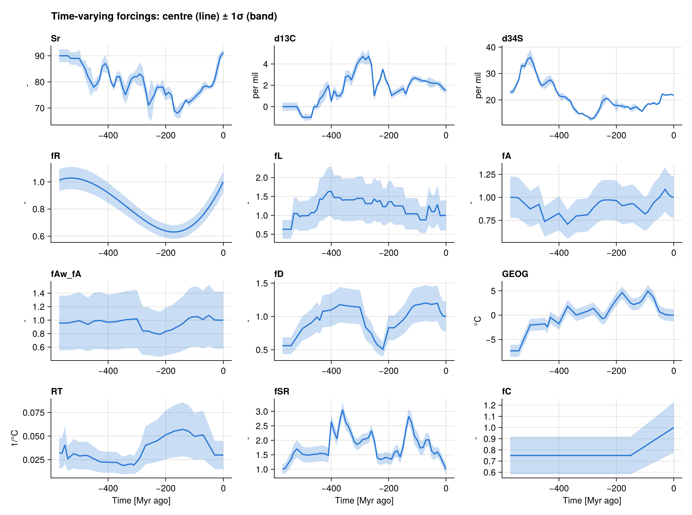
1.5 A first run
run_geocarb takes the constants and the forcings and returns CO₂ (ppmv), O₂ (%), a temperature and a status for each step. Here everything is at its prior mean:
p = mean_constants(table)
f = tprior.center
r = run_geocarb(p, f)GeocarbResult{Float64}: 58 steps, all converged
present day: CO2 = 243.6674164797794 ppmv, O2 = 20.470467993407965 %, temp = -0.2220884991757911 °Cplot_runs(["prior means" => r])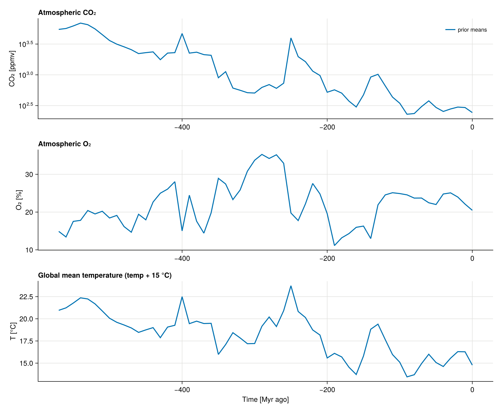
The temperature drawn is temperature(r), which is the model's temp plus 15 °C. That is the quantity compared with the temperature windows in precalibration. The documentation page Temperature conventions explains the other variants.
1.6 Climate sensitivity
update returns a copy of the constants with some values changed. Here ΔT2x goes from 1.5 to 6 °C per doubling:
runs = ["ΔT2x = $(x) °C" => run_geocarb(update(p; deltaT2X=x), f) for x in (1.5, 3.0, 4.5, 6.0)]
plot_runs(runs)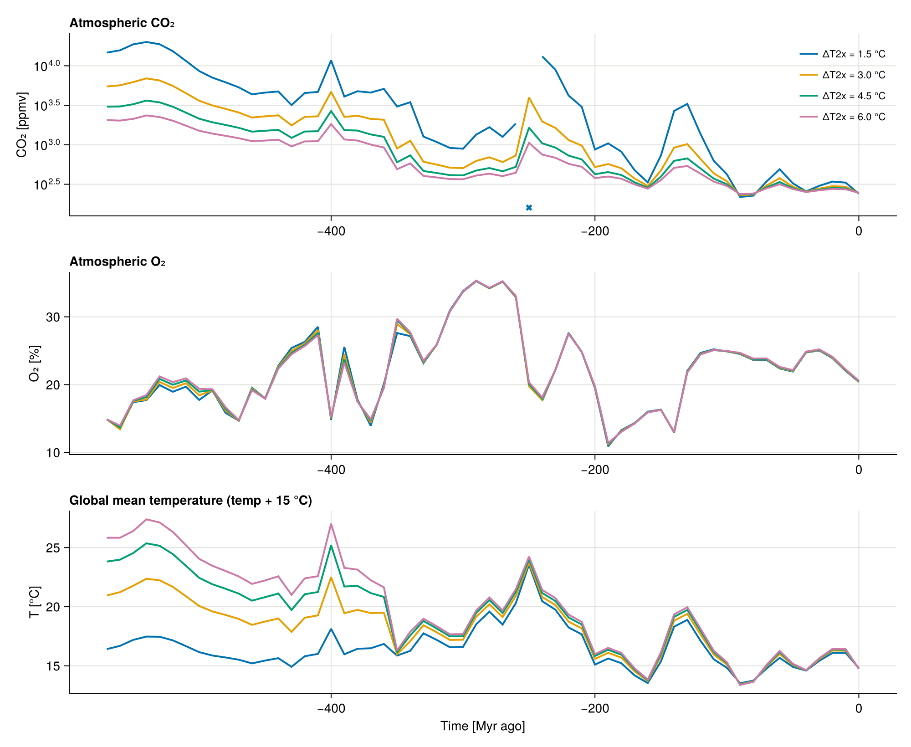
Weathering responds to temperature, and temperature responds to CO₂ through ΔT2x. With a more sensitive climate, a smaller change in CO₂ moves the temperature, and so the weathering rate, far enough to balance the carbon budget. Compare how much the CO₂ histories and the temperature histories spread as ΔT2x changes: the two records respond to ΔT2x differently, which is why Wong et al. (2021) use CO₂ proxies and a temperature reconstruction together.
1.7 When a step fails
The CO₂ solver can fail for some parameter values: it does not converge, produces a NaN, or leaves the allowed CO₂ range. The original Fortran then writes Inf into CO₂ and O₂ for that step and keeps integrating from that invalid state (finding F-08 of the porting review). The Julia port keeps this behaviour so that results match, and records why each step failed in r.status.
How often does that happen? Run the model on random draws from the priors (constants by Latin hypercube, forcings by the inverse-Wishart sampler of the precalibration):
draws = prior_draws(N_DRAWS)
results = [run_geocarb(q, g) for (q, g) in draws]
callout(
:note,
"$(count(succeeded, results)) of $(length(results)) random prior draws have every step valid; " *
"the rest fail at one step or more.",
)ℹ️ Note. 5 of 400 random prior draws have every step valid; the rest fail at one step or more.
plot_step_status(results; title="Step status of $(length(results)) random prior draws")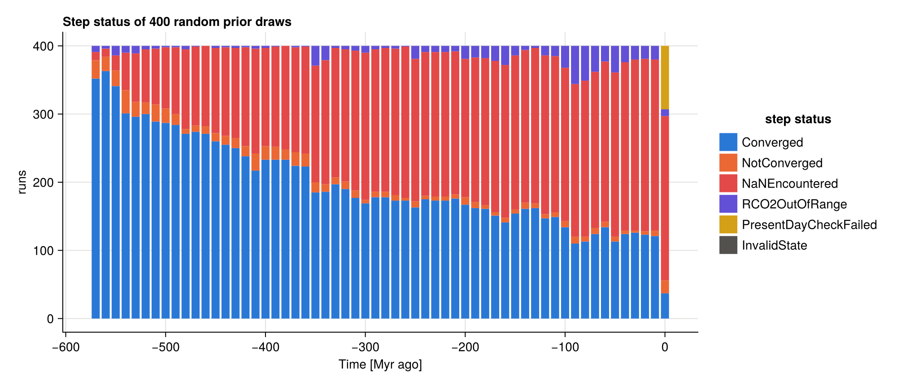
Most prior draws fail somewhere (of the 1000 draws of the original R code compared in Part 2, only 6 have every step valid), which is one reason precalibration rejects so many samples. It also matters in Part 2: after a failed step the legacy model works with invalid numbers, so tiny rounding differences grow there. That is why the comparison is judged separately before and after a run's first failed step.
1.8 Options and the supplemental experiments
The original code had a second Fortran file, run_geocarb_supp.f90, for the supplemental experiments of the paper. In Julia they are options of the one model:
| experiment | ModelOptions |
|---|---|
| control | defaults |
| gym | gym_factor = 0.25 |
| timing | gym_angio_transition = (110, 60) |
| gym + timing | both |
| ΔT2x ramp | dT2X_ramp = true |
| gym + timing + ΔT2x ramp | all three |
opts = ModelOptions(; gym_angio_transition=(110, 60), gym_factor=0.25, dT2X_ramp=true)
plot_runs(["defaults" => r, "gym + timing + ΔT2x ramp" => run_geocarb(p, f; options=opts)])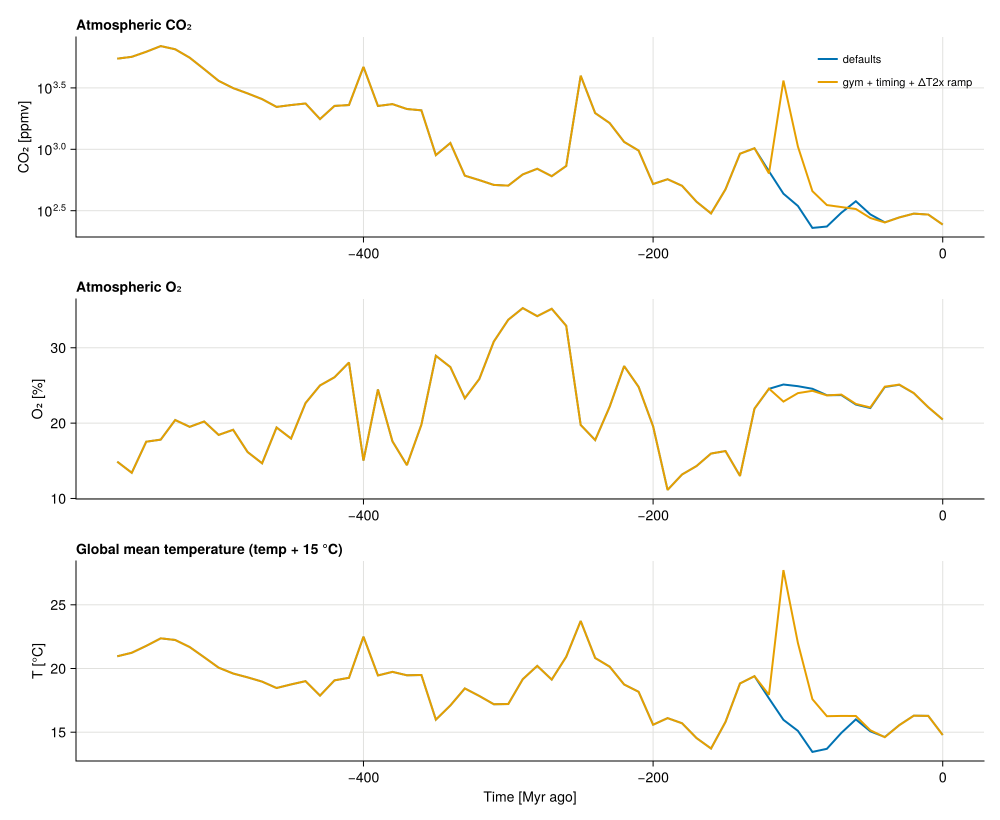
What the gymnosperm options change: the weathering factor of plants, fE, over time (a figure from the package's plotting extension).
plot_gym_modification()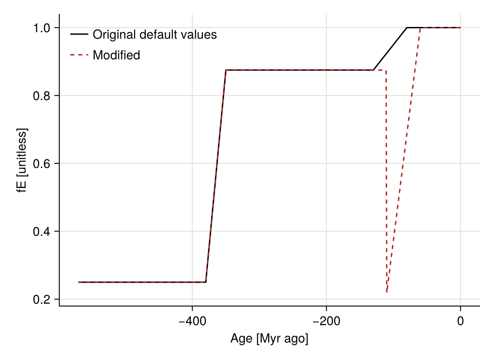
1.9 A case study: single-precision literals (finding F-05)
The compiled Fortran stores decimal constants such as 0.01, 0.9 and log(2.0) in single precision, because that is what gfortran does with default REAL literals. Using the "cleaner" double-precision values would seem harmless. It is not:
results64 = [run_geocarb(q, g; options=ModelOptions(; fortran_single_literals=false)) for (q, g) in draws]
plot_literal_effect(results, results64)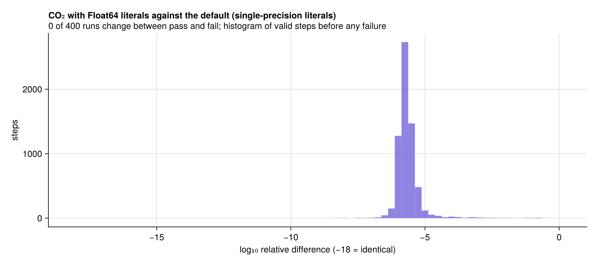
Some runs change from pass to fail or back, and valid steps move by far more than rounding error. In the 1000-sample comparison with the original code (Part 2), 101 runs flipped and CO₂ moved by up to 14 % in otherwise valid steps. So the port reproduces the single-precision literals by default (fortran_single_literals = true), and false is documented as a model change, not a precision improvement.
1.10 Windows and % outbound
Precalibration compares each run with windows at every step:
- CO₂ windows come from the proxy compilation of Foster et al. (2017): at each step, the envelope of the proxies within ±5 Myr and their uncertainties;
- temperature windows come from the reconstruction of Mills et al. (2019).
proxy = read_proxy_data(PROXY_FILE)
cw = co2_windows(proxy, f.age)
tw = temperature_windows(read_temperature_data(TEMP_FILE), f.age)
plot_co2_windows_and_proxies(proxy, cw)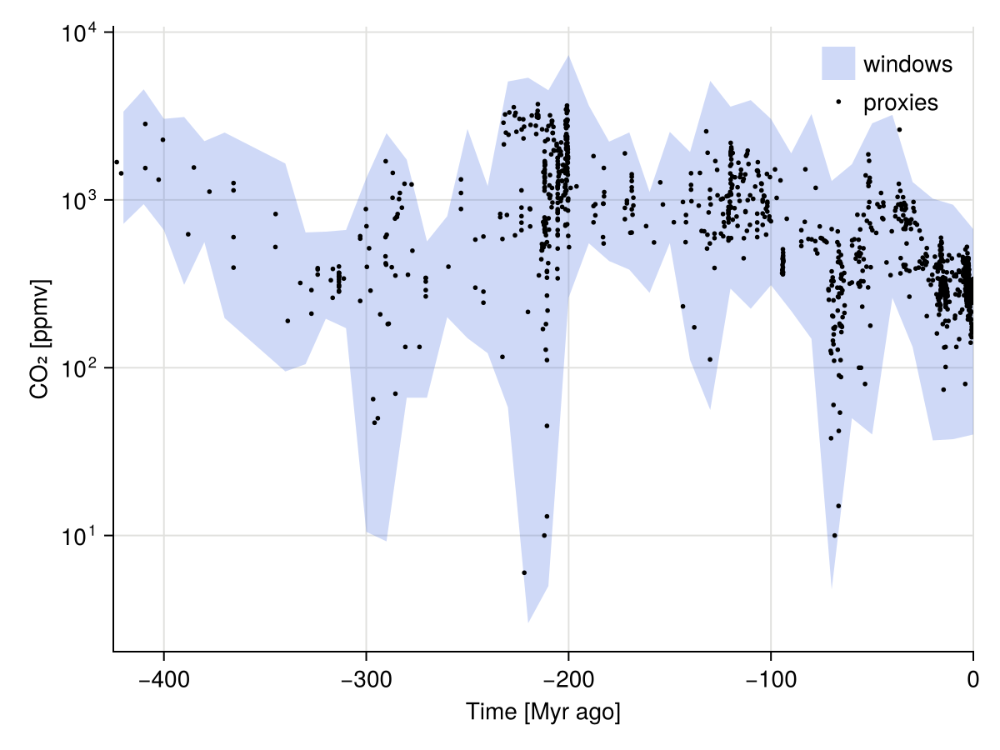
The run at the prior means, against both windows:
plot_runs(["prior means" => r]; cw, tw)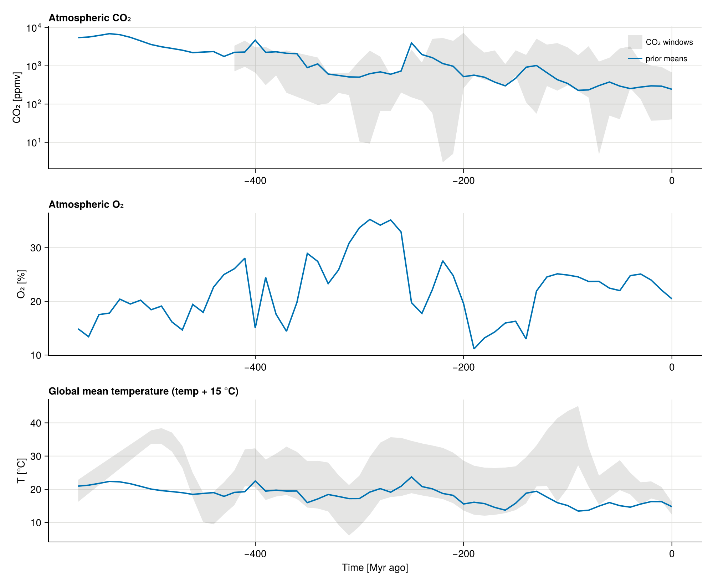
The % outbound is the fraction of steps outside the window. For CO₂ a failed step makes it 1, because CO₂ is Inf there; temperature is not set to Inf on failed steps, so its % outbound is unaffected (finding F-04). An experiment accepts a run if its % outbound is at most a threshold, for CO₂, temperature or both.
callout(
:note,
@sprintf(
"At the prior means: %.0f %% of steps outside the CO₂ windows, %.0f %% outside the temperature windows.",
100 * legacy_percent_outbound(r.co2, cw),
100 * percent_outbound(r, tw, :temp)
),
)ℹ️ Note. At the prior means: 14 % of steps outside the CO₂ windows, 36 % outside the temperature windows.
1.11 A small precalibration
Experiments are TOML files. experiments/example_small.toml is a quick one: up to 20 000 simulations, stopping once 1000 runs are accepted with at most 50 % outbound for both CO₂ and temperature:
print(read(joinpath(ROOT, "experiments", "example_small.toml"), String))# A small experiment that finishes in about a minute: a quick way to check an
# installation or to try out options. Increase n_sample for real results.
name = "example_small"
description = "Small CO2 + temperature precalibration at 50 % outbound"
constraint = "both"
threshold = 0.5
seed = 42
n_sample = 20_000
n_per_chunk = 2_000
n_accept_min = 1_000
output_dir = "results/example"
Its output_dir is results/example inside the repository. The notebook points it at a temporary folder instead, so running the notebook never writes into the repository. (In quick mode the experiment is also made smaller.)
cfg = only(load_experiments(joinpath(ROOT, "experiments", "example_small.toml")))
quick = FAST ? (; n_sample=6_000, n_per_chunk=1_000, n_accept_min=150) : (;)
cfg = with_overrides(cfg; output_dir=mktempdir(), quick...)
println("results will be written to ", joinpath(cfg.output_dir, cfg.tag))results will be written to ~\AppData\Local\Temp\jl_3msmkx\ct_out50
run_precalibration runs the chunks in parallel on all threads of this session. The result does not depend on the number of threads: each chunk has its own random stream, and chunks are combined in order. This takes about a minute.
res = run_precalibration(cfg)PrecalibrationResult "ct_out50": 180 accepted of 20000 simulated
age grid: 58 steps; covariances not storedresdir = joinpath(cfg.output_dir, cfg.tag)
save_result(joinpath(resdir, "result.jld2"), res)
written = write_summary_csvs(resdir, res)
println("saved:\n ", join(vcat(joinpath(resdir, "result.jld2"), written), "\n "))saved:
~\AppData\Local\Temp\jl_3msmkx\ct_out50\result.jld2
~\AppData\Local\Temp\jl_3msmkx\ct_out50\constants.csv
~\AppData\Local\Temp\jl_3msmkx\ct_out50\prcout.csv
~\AppData\Local\Temp\jl_3msmkx\ct_out50\provenance.toml
1.12 Its results
The headline numbers of the paper are quantiles of ΔT2x and of the glacial sensitivity ΔT2x·GLAC over the accepted samples:
tbl, exceed = n_accepted(res) > 0 ? sensitivity_table(res) : (nothing, nothing)
isnothing(tbl) ? callout(:warn, "No sample was accepted; increase `n_sample` in the cell above.") : tbl| 5 % | 50 % | 95 % | |
|---|---|---|---|
| ΔT2x [°C] | 2.56 | 3.50 | 4.84 |
| GLAC [–] | 1.38 | 2.03 | 2.80 |
| ΔT2x·GLAC (glacial) [°C] | 4.51 | 7.07 | 10.54 |
isnothing(exceed) ? nothing : callout(:note, exceed)ℹ️ Note. Pr(ΔT2x ≥ 6 °C) = 0.006; Pr(ΔT2x ≥ 7 °C) = 0.006
Prior and posterior of ΔT2x, with the estimate of Park & Royer (2011) for comparison:
if n_accepted(res) > 0
dT2X_prior = only(filter(q -> q.name == :deltaT2X, build_priors(table)))
park_royer = read_park_royer_2011(datapath("ParkRoyer2011_Fig3_85varred.csv"))
plot_deltaT2X_distributions(res; prior=dT2X_prior, park_royer)
end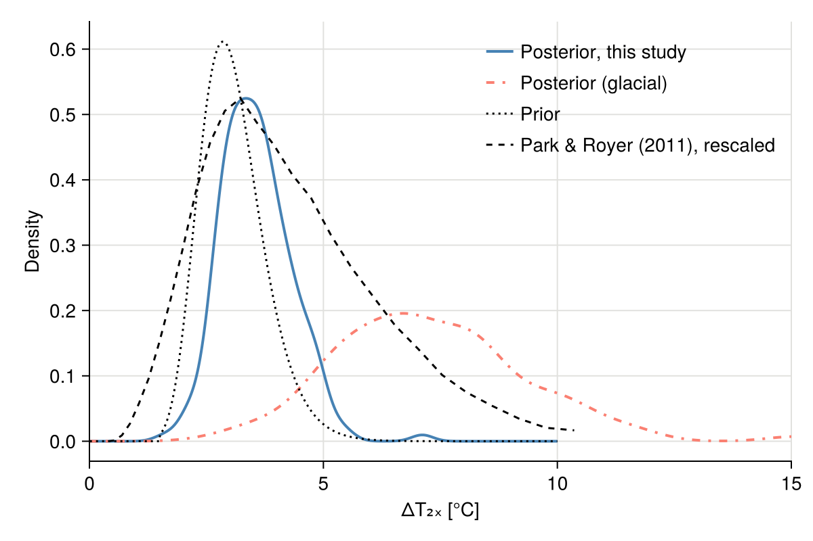
The accepted runs (bands: 50, 90 and 95 % ranges) against the CO₂ proxies and the temperature windows:
n_accepted(res) > 0 ? plot_model_vs_proxy(res, proxy, tw) : callout(:warn, "No accepted samples to plot.")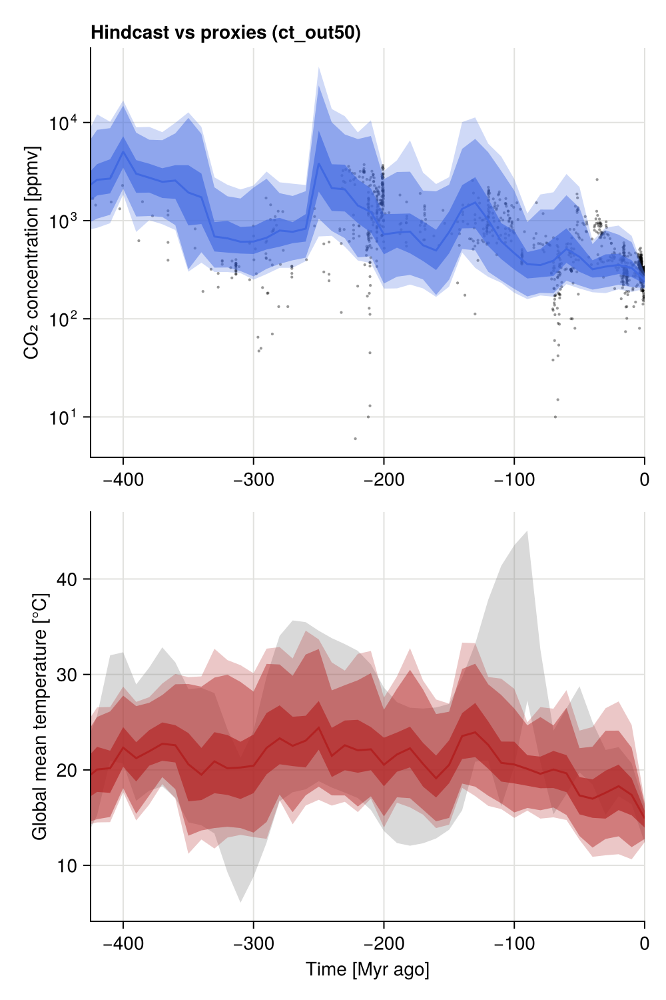
ℹ️ Note. This is a small demonstration, not the paper's result: the paper's experiments use far more simulations and several thresholds (see
experiments/main/grid.toml). The commands below reproduce them.
1.13 Going further
- Reproduce the paper, from the repository folder (use
-t autofor all threads):julia --project=. -t auto scripts/run_experiment.jl experiments/main/grid.tomljulia --project=. -t auto scripts/run_experiment.jl experiments/main/ct_out30_extra_seeds.toml- the five files in
experiments/supplemental/and the two inexperiments/cretaceous/ - then
scripts/analysis_main.jl,scripts/analysis_supplemental.jlandscripts/analysis_cretaceous.jl
--dry-runchecks a configuration quickly;--checkpointmakes long runs resumable.- Write your own experiment: copy a TOML file and change
constraint,threshold,n_sample,seedor the[model]table (anyModelOptionskeyword). - Documentation: the pages The model, Precalibration, Experiments and Porting notes of the package documentation.
Part 2: verification against the original R/Fortran code
2.1 What "the same answer" means
The Julia model is a line-by-line port, but its numbers cannot be bit-for-bit identical to the Fortran's. Julia's exp, log and ^ and the C library that gfortran uses occasionally round the last bit of a result differently. Even two builds of the same Fortran (the main and supplemental libraries) differ by up to 8e-10 for that reason. So agreement is judged with tolerances, read here from test/tolerances.toml, the single file both Fortran tests use:
tol = read_tolerances()
html_table(
["check", "requirement"],
[
["positions of Inf and NaN (which steps fail)", "identical"],
["% outbound (decides acceptance)", "identical"],
["values before a run's first failed step", "relative difference ≤ " * fmt(tol.rtol_clean)],
["values at or after a run's first failed step", "relative difference ≤ " * fmt(tol.rtol_post)],
["absolute tolerance added to both", fmt(tol.atol)],
];
caption="How the port is judged (test/tolerances.toml)",
)| check | requirement |
|---|---|
| positions of Inf and NaN (which steps fail) | identical |
| % outbound (decides acceptance) | identical |
| values before a run's first failed step | relative difference ≤ 1.00e-08 |
| values at or after a run's first failed step | relative difference ≤ 1.00e-04 |
| absolute tolerance added to both | 1.00e-10 |
The relative difference of two values a and b is their difference divided by the larger of the two magnitudes, after allowing the absolute tolerance.
ℹ️ Why two regions (finding F-08). In a valid step the model is well conditioned: a last-bit difference stays a last-bit difference (below about 4e-9). When a step fails, the legacy code writes
Infinto CO₂ and O₂ but keeps integrating from the invalid state. The steps after that are badly conditioned, and the same last-bit differences grow, up to 9.0e-6 relative so far (golden fixtures from the Fortran compiled in CI, November 2026). The limit after a failure is 1e-4, about 11 times the largest difference seen. A real porting error is still caught: it changes valid steps by far more than 1e-8, or moves a failure, or changes a % outbound, and all three are checked separately.
2.2 Three levels of evidence
The comparison can be made at three levels. They differ in what they need and in what they prove:
levels_table(env, RUN_LEVEL_B, RUN_LEVEL_C)| level | compares Julia against | needs | proves | does not prove | here |
|---|---|---|---|---|---|
| A golden master | stored output of the compiled original Fortran (test/fixtures/fortran): 100 prior samples, main model and 6 supplemental variants | Julia only | the Julia model reproduces the Fortran model at every step, on this machine and Julia version | the input pipeline, priors, windows or % outbound; inputs other than those 100 samples | will run |
| B replay | inputs and outputs saved by an earlier run of the unmodified R/Fortran code (test/legacy_comparison/output, 1000 samples) | an earlier level-C run on this machine (the folder is not in git) | the whole Julia pipeline (input processing, prior transform, model, % outbound, supplemental variants) reproduces what the original code produced then | that the original code still runs, or runs the same way, here and now | will run (exports from 2026-11-20 14:56) |
| C live | the unmodified R/Fortran code in legacy/, run now | R ≥ 4.1 with lhs, CholWishart, abind, MASS; a Fortran compiler or compiled libraries | everything level B proves, against output produced now on this machine; also that R passed the inputs to the Fortran unchanged (direct ccall, bit for bit) | other operating systems (CI's Legacy workflow runs it on Linux) | will run |
2.3 The test suite
The package's tests are grouped (test/runtests.jl); CI runs them on Linux, macOS and Windows. Here each group runs with Pkg.test() in its own Julia process, exactly as on the command line (GROUP=unit julia --project=. -e "using Pkg; Pkg.test()"). Every process compiles the package once, so this takes several minutes.
| group | what it checks |
|---|---|
unit | physics pieces, step-status invariants on 200 prior draws, options, input validation, zero allocations, Float32 and ForwardDiff inputs |
io | the CSV reader, prior table, time arrays, proxies, temperature data |
sampling | Latin hypercube strata, truncated priors (KS tests), inverse-Wishart degrees of freedom, sampler moments |
constraints | CO₂ and temperature windows, % outbound |
workflow | configuration files, the engine (stopping rule, determinism across thread counts, checkpoints), saving, analysis |
regression | level A: the golden master against stored Fortran output |
quality | Aqua.jl: stale dependencies, compat bounds, type piracy, ambiguities |
doctests | the examples in the docstrings |
println("running ", length(TEST_GROUPS), " test groups:")
test_results = run_test_groups(TEST_GROUPS)
test_results_table(test_results)| group | result | pass | fail | error | broken | total | wall time |
|---|---|---|---|---|---|---|---|
| unit | ✔ pass | 191 | 0 | 0 | 0 | 191 | 13 s |
| io | ✔ pass | 48 | 0 | 0 | 0 | 48 | 9 s |
| sampling | ✔ pass | 40 | 0 | 0 | 0 | 40 | 13 s |
| constraints | ✔ pass | 24 | 0 | 0 | 0 | 24 | 10 s |
| workflow | ✔ pass | 103 | 0 | 0 | 0 | 103 | 28 s |
| regression | ✔ pass | 42 | 0 | 0 | 0 | 42 | 10 s |
| quality | ✔ pass | 11 | 0 | 0 | 0 | 11 | 20 s |
| doctests | ✔ pass | 1 | 0 | 0 | 0 | 1 | 14 s |
plot_test_results(test_results)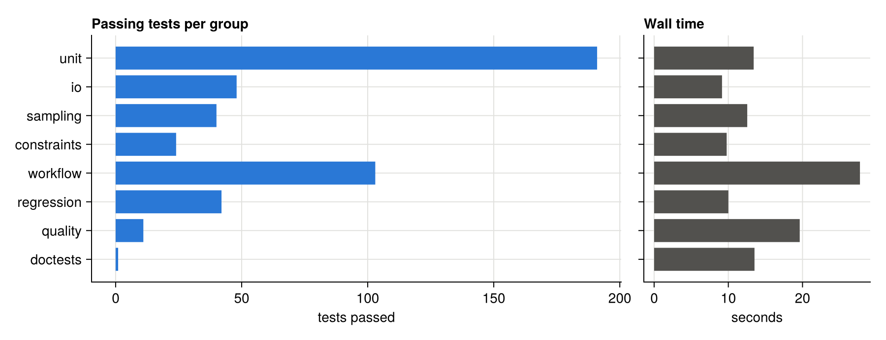
Each group's full output is in the log file named in test_results; for example test_results[1].log.
2.4 Level A: the golden master
test/fixtures/fortran/ holds inputs and outputs of the compiled original Fortran for 100 prior samples, for the main model and the six supplemental variants (produced by the unmodified R/Fortran code, see test/fixtures/README.md). The regression group above checks them with pass/fail. Here the same comparison is repeated with the numbers kept, so you can see how close the agreement is, not only that it passes:
golden = golden_master_checks()
plot_headroom(golden; title="Level A: Julia against the stored output of the compiled Fortran")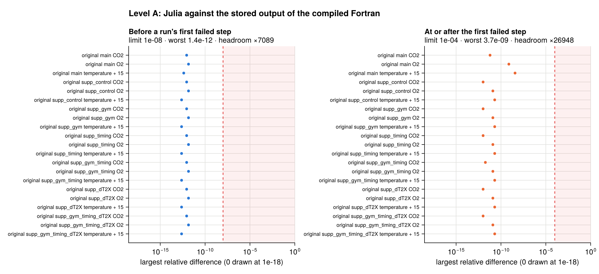
How to read the figure: each row is one quantity of one model variant. The dot is the largest relative difference over all its cells (runs × steps); the dashed line is the tolerance; the shaded zone is where the check would fail. Left: cells before a run's first failed step (limit 1e-8). Right: cells at or after it, where the legacy code integrates from an invalid state (finding F-08, section 2.1) and the limit is 1e-4. Rows labelled "pass/fail positions" are not drawn: they require the failed steps to be in identical places, and their result is in the table.
checks_table(golden; collapsed="All $(length(golden)) level-A checks (click to expand)")All 63 level-A checks (click to expand)
| check | cells | largest rel. difference | tolerance | Inf/NaN mismatches | out of tolerance | |
|---|---|---|---|---|---|---|
| original main CO2: pass/fail (Inf/NaN) positions | 5800 | 0 | identical | 0 | 0 | ✔ pass |
| original main CO2 [before any failure] | 1541 | 8.74e-13 | 1.00e-08 | 0 | 0 | ✔ pass |
| original main CO2 [at/after a failure] | 4259 | 6.08e-12 | 1.00e-04 | 0 | 0 | ✔ pass |
| original main O2: pass/fail (Inf/NaN) positions | 5800 | 0 | identical | 0 | 0 | ✔ pass |
| original main O2 [before any failure] | 1541 | 1.41e-12 | 1.00e-08 | 0 | 0 | ✔ pass |
| original main O2 [at/after a failure] | 4259 | 7.59e-10 | 1.00e-04 | 0 | 0 | ✔ pass |
| original main temperature + 15: pass/fail (Inf/NaN) positions | 5800 | 0 | identical | 0 | 0 | ✔ pass |
| original main temperature + 15 [before any failure] | 1541 | 4.15e-13 | 1.00e-08 | 0 | 0 | ✔ pass |
| original main temperature + 15 [at/after a failure] | 4259 | 3.71e-09 | 1.00e-04 | 0 | 0 | ✔ pass |
| original supp_control CO2: pass/fail (Inf/NaN) positions | 5800 | 0 | identical | 0 | 0 | ✔ pass |
| original supp_control CO2 [before any failure] | 1541 | 8.73e-13 | 1.00e-08 | 0 | 0 | ✔ pass |
| original supp_control CO2 [at/after a failure] | 4259 | 1.02e-12 | 1.00e-04 | 0 | 0 | ✔ pass |
| original supp_control O2: pass/fail (Inf/NaN) positions | 5800 | 0 | identical | 0 | 0 | ✔ pass |
| original supp_control O2 [before any failure] | 1541 | 1.41e-12 | 1.00e-08 | 0 | 0 | ✔ pass |
| original supp_control O2 [at/after a failure] | 4259 | 1.25e-11 | 1.00e-04 | 0 | 0 | ✔ pass |
| original supp_control temperature + 15: pass/fail (Inf/NaN) positions | 5800 | 0 | identical | 0 | 0 | ✔ pass |
| original supp_control temperature + 15 [before any failure] | 1541 | 2.38e-13 | 1.00e-08 | 0 | 0 | ✔ pass |
| original supp_control temperature + 15 [at/after a failure] | 4259 | 2.01e-11 | 1.00e-04 | 0 | 0 | ✔ pass |
| original supp_gym CO2: pass/fail (Inf/NaN) positions | 5800 | 0 | identical | 0 | 0 | ✔ pass |
| original supp_gym CO2 [before any failure] | 1545 | 8.73e-13 | 1.00e-08 | 0 | 0 | ✔ pass |
| original supp_gym CO2 [at/after a failure] | 4255 | 1.02e-12 | 1.00e-04 | 0 | 0 | ✔ pass |
| original supp_gym O2: pass/fail (Inf/NaN) positions | 5800 | 0 | identical | 0 | 0 | ✔ pass |
| original supp_gym O2 [before any failure] | 1545 | 1.41e-12 | 1.00e-08 | 0 | 0 | ✔ pass |
| original supp_gym O2 [at/after a failure] | 4255 | 1.25e-11 | 1.00e-04 | 0 | 0 | ✔ pass |
| original supp_gym temperature + 15: pass/fail (Inf/NaN) positions | 5800 | 0 | identical | 0 | 0 | ✔ pass |
| original supp_gym temperature + 15 [before any failure] | 1545 | 2.38e-13 | 1.00e-08 | 0 | 0 | ✔ pass |
| original supp_gym temperature + 15 [at/after a failure] | 4255 | 2.01e-11 | 1.00e-04 | 0 | 0 | ✔ pass |
| original supp_timing CO2: pass/fail (Inf/NaN) positions | 5800 | 0 | identical | 0 | 0 | ✔ pass |
| original supp_timing CO2 [before any failure] | 1542 | 8.73e-13 | 1.00e-08 | 0 | 0 | ✔ pass |
| original supp_timing CO2 [at/after a failure] | 4258 | 1.02e-12 | 1.00e-04 | 0 | 0 | ✔ pass |
| original supp_timing O2: pass/fail (Inf/NaN) positions | 5800 | 0 | identical | 0 | 0 | ✔ pass |
| original supp_timing O2 [before any failure] | 1542 | 1.41e-12 | 1.00e-08 | 0 | 0 | ✔ pass |
| original supp_timing O2 [at/after a failure] | 4258 | 1.25e-11 | 1.00e-04 | 0 | 0 | ✔ pass |
| original supp_timing temperature + 15: pass/fail (Inf/NaN) positions | 5800 | 0 | identical | 0 | 0 | ✔ pass |
| original supp_timing temperature + 15 [before any failure] | 1542 | 2.38e-13 | 1.00e-08 | 0 | 0 | ✔ pass |
| original supp_timing temperature + 15 [at/after a failure] | 4258 | 2.01e-11 | 1.00e-04 | 0 | 0 | ✔ pass |
| original supp_gym_timing CO2: pass/fail (Inf/NaN) positions | 5800 | 0 | identical | 0 | 0 | ✔ pass |
| original supp_gym_timing CO2 [before any failure] | 1551 | 8.73e-13 | 1.00e-08 | 0 | 0 | ✔ pass |
| original supp_gym_timing CO2 [at/after a failure] | 4249 | 1.83e-12 | 1.00e-04 | 0 | 0 | ✔ pass |
| original supp_gym_timing O2: pass/fail (Inf/NaN) positions | 5800 | 0 | identical | 0 | 0 | ✔ pass |
| original supp_gym_timing O2 [before any failure] | 1551 | 1.41e-12 | 1.00e-08 | 0 | 0 | ✔ pass |
| original supp_gym_timing O2 [at/after a failure] | 4249 | 1.25e-11 | 1.00e-04 | 0 | 0 | ✔ pass |
| original supp_gym_timing temperature + 15: pass/fail (Inf/NaN) positions | 5800 | 0 | identical | 0 | 0 | ✔ pass |
| original supp_gym_timing temperature + 15 [before any failure] | 1551 | 2.38e-13 | 1.00e-08 | 0 | 0 | ✔ pass |
| original supp_gym_timing temperature + 15 [at/after a failure] | 4249 | 2.01e-11 | 1.00e-04 | 0 | 0 | ✔ pass |
| original supp_dT2X CO2: pass/fail (Inf/NaN) positions | 5800 | 0 | identical | 0 | 0 | ✔ pass |
| original supp_dT2X CO2 [before any failure] | 1548 | 8.73e-13 | 1.00e-08 | 0 | 0 | ✔ pass |
| original supp_dT2X CO2 [at/after a failure] | 4252 | 1.02e-12 | 1.00e-04 | 0 | 0 | ✔ pass |
| original supp_dT2X O2: pass/fail (Inf/NaN) positions | 5800 | 0 | identical | 0 | 0 | ✔ pass |
| original supp_dT2X O2 [before any failure] | 1548 | 1.41e-12 | 1.00e-08 | 0 | 0 | ✔ pass |
| original supp_dT2X O2 [at/after a failure] | 4252 | 1.25e-11 | 1.00e-04 | 0 | 0 | ✔ pass |
| original supp_dT2X temperature + 15: pass/fail (Inf/NaN) positions | 5800 | 0 | identical | 0 | 0 | ✔ pass |
| original supp_dT2X temperature + 15 [before any failure] | 1548 | 2.38e-13 | 1.00e-08 | 0 | 0 | ✔ pass |
| original supp_dT2X temperature + 15 [at/after a failure] | 4252 | 2.01e-11 | 1.00e-04 | 0 | 0 | ✔ pass |
| original supp_gym_timing_dT2X CO2: pass/fail (Inf/NaN) positions | 5800 | 0 | identical | 0 | 0 | ✔ pass |
| original supp_gym_timing_dT2X CO2 [before any failure] | 1552 | 8.73e-13 | 1.00e-08 | 0 | 0 | ✔ pass |
| original supp_gym_timing_dT2X CO2 [at/after a failure] | 4248 | 1.02e-12 | 1.00e-04 | 0 | 0 | ✔ pass |
| original supp_gym_timing_dT2X O2: pass/fail (Inf/NaN) positions | 5800 | 0 | identical | 0 | 0 | ✔ pass |
| original supp_gym_timing_dT2X O2 [before any failure] | 1552 | 1.41e-12 | 1.00e-08 | 0 | 0 | ✔ pass |
| original supp_gym_timing_dT2X O2 [at/after a failure] | 4248 | 1.25e-11 | 1.00e-04 | 0 | 0 | ✔ pass |
| original supp_gym_timing_dT2X temperature + 15: pass/fail (Inf/NaN) positions | 5800 | 0 | identical | 0 | 0 | ✔ pass |
| original supp_gym_timing_dT2X temperature + 15 [before any failure] | 1552 | 2.38e-13 | 1.00e-08 | 0 | 0 | ✔ pass |
| original supp_gym_timing_dT2X temperature + 15 [at/after a failure] | 4248 | 2.01e-11 | 1.00e-04 | 0 | 0 | ✔ pass |
2.5 Level B: replaying stored exports of the original code
When the original R/Fortran code has been run on this machine before (level C, or test/legacy_comparison/run_comparison.jl), its inputs and outputs are in test/legacy_comparison/output/. That folder is not in git, so a fresh clone has none. If they exist, they are copied to a temporary folder and compared there, so the stored files are never overwritten.
resB = (RUN_LEVEL_B && env.exports.available) ? replay_stored_exports() : nothing
level_status(resB, :B, env, RUN_LEVEL_B)✅ Level B: all 84 checks pass in 5 s. Pass/fail positions identical in all 25 position checks; largest relative difference 2.24e-10 before a failure and 7.30e-08 at or after one. The exports were made with: R: R version 4.6.2 (2026-10-29 ucrt); seed: 2026; nsample: 1000; nsupp: 200. Report:
~\AppData\Local\Temp\jl_NcaFW6\comparison_report.txt.
level_headroom(resB, "Level B: Julia against stored exports of the original R/Fortran code")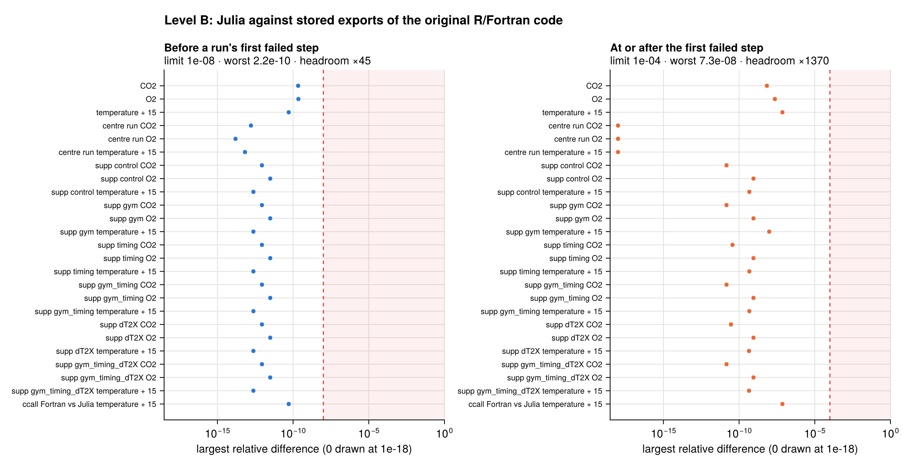
level_checks_table(resB, "level-B")All 84 level-B checks (click to expand)
| check | cells | largest rel. difference | tolerance | Inf/NaN mismatches | out of tolerance | |
|---|---|---|---|---|---|---|
| time-array centres (Goddéris, fAw/fA normalised) | 696 | 0 | 1.00e-08 | 0 | 0 | ✔ pass |
| time-array standard deviations | 696 | 0 | 1.00e-08 | 0 | 0 | ✔ pass |
| inverse-Wishart degrees of freedom | 12 | 0 | 0 | 0 | 0 | ✔ pass |
| CO2 windows | 116 | 0 | 1.00e-08 | 0 | 0 | ✔ pass |
| temperature windows | 116 | 0 | 1.00e-08 | 0 | 0 | ✔ pass |
| truncated-prior quantiles | 56000 | 1.12e-12 | 1.00e-08 | 0 | 0 | ✔ pass |
| CO2: pass/fail (Inf/NaN) positions | 58000 | 0 | identical | 0 | 0 | ✔ pass |
| CO2 [before any failure] | 15775 | 2.15e-10 | 1.00e-08 | 0 | 0 | ✔ pass |
| CO2 [at/after a failure] | 42225 | 6.85e-09 | 1.00e-04 | 0 | 0 | ✔ pass |
| O2: pass/fail (Inf/NaN) positions | 58000 | 0 | identical | 0 | 0 | ✔ pass |
| O2 [before any failure] | 15775 | 2.24e-10 | 1.00e-08 | 0 | 0 | ✔ pass |
| O2 [at/after a failure] | 42225 | 2.30e-08 | 1.00e-04 | 0 | 0 | ✔ pass |
| temperature + 15: pass/fail (Inf/NaN) positions | 58000 | 0 | identical | 0 | 0 | ✔ pass |
| temperature + 15 [before any failure] | 15775 | 5.14e-11 | 1.00e-08 | 0 | 0 | ✔ pass |
| temperature + 15 [at/after a failure] | 42225 | 7.30e-08 | 1.00e-04 | 0 | 0 | ✔ pass |
| % outbound CO2 | 1000 | 0 | 0 | 0 | 0 | ✔ pass |
| % outbound temperature | 1000 | 0 | 0 | 0 | 0 | ✔ pass |
| centre run CO2: pass/fail (Inf/NaN) positions | 58 | 0 | identical | 0 | 0 | ✔ pass |
| centre run CO2 [before any failure] | 58 | 1.64e-13 | 1.00e-08 | 0 | 0 | ✔ pass |
| centre run CO2 [at/after a failure] | 0 | 0 | 1.00e-04 | 0 | 0 | ✔ pass |
| centre run O2: pass/fail (Inf/NaN) positions | 58 | 0 | identical | 0 | 0 | ✔ pass |
| centre run O2 [before any failure] | 58 | 1.57e-14 | 1.00e-08 | 0 | 0 | ✔ pass |
| centre run O2 [at/after a failure] | 0 | 0 | 1.00e-04 | 0 | 0 | ✔ pass |
| centre run temperature + 15: pass/fail (Inf/NaN) positions | 58 | 0 | identical | 0 | 0 | ✔ pass |
| centre run temperature + 15 [before any failure] | 58 | 6.59e-14 | 1.00e-08 | 0 | 0 | ✔ pass |
| centre run temperature + 15 [at/after a failure] | 0 | 0 | 1.00e-04 | 0 | 0 | ✔ pass |
| supp control CO2: pass/fail (Inf/NaN) positions | 11600 | 0 | identical | 0 | 0 | ✔ pass |
| supp control CO2 [before any failure] | 3225 | 8.73e-13 | 1.00e-08 | 0 | 0 | ✔ pass |
| supp control CO2 [at/after a failure] | 8375 | 1.47e-11 | 1.00e-04 | 0 | 0 | ✔ pass |
| supp control O2: pass/fail (Inf/NaN) positions | 11600 | 0 | identical | 0 | 0 | ✔ pass |
| supp control O2 [before any failure] | 3225 | 3.09e-12 | 1.00e-08 | 0 | 0 | ✔ pass |
| supp control O2 [at/after a failure] | 8375 | 8.91e-10 | 1.00e-04 | 0 | 0 | ✔ pass |
| supp control temperature + 15: pass/fail (Inf/NaN) positions | 11600 | 0 | identical | 0 | 0 | ✔ pass |
| supp control temperature + 15 [before any failure] | 3225 | 2.38e-13 | 1.00e-08 | 0 | 0 | ✔ pass |
| supp control temperature + 15 [at/after a failure] | 8375 | 4.76e-10 | 1.00e-04 | 0 | 0 | ✔ pass |
| supp gym CO2: pass/fail (Inf/NaN) positions | 11600 | 0 | identical | 0 | 0 | ✔ pass |
| supp gym CO2 [before any failure] | 3194 | 8.73e-13 | 1.00e-08 | 0 | 0 | ✔ pass |
| supp gym CO2 [at/after a failure] | 8406 | 1.47e-11 | 1.00e-04 | 0 | 0 | ✔ pass |
| supp gym O2: pass/fail (Inf/NaN) positions | 11600 | 0 | identical | 0 | 0 | ✔ pass |
| supp gym O2 [before any failure] | 3194 | 3.09e-12 | 1.00e-08 | 0 | 0 | ✔ pass |
| supp gym O2 [at/after a failure] | 8406 | 8.91e-10 | 1.00e-04 | 0 | 0 | ✔ pass |
| supp gym temperature + 15: pass/fail (Inf/NaN) positions | 11600 | 0 | identical | 0 | 0 | ✔ pass |
| supp gym temperature + 15 [before any failure] | 3194 | 2.38e-13 | 1.00e-08 | 0 | 0 | ✔ pass |
| supp gym temperature + 15 [at/after a failure] | 8406 | 9.79e-09 | 1.00e-04 | 0 | 0 | ✔ pass |
| supp timing CO2: pass/fail (Inf/NaN) positions | 11600 | 0 | identical | 0 | 0 | ✔ pass |
| supp timing CO2 [before any failure] | 3227 | 8.73e-13 | 1.00e-08 | 0 | 0 | ✔ pass |
| supp timing CO2 [at/after a failure] | 8373 | 3.66e-11 | 1.00e-04 | 0 | 0 | ✔ pass |
| supp timing O2: pass/fail (Inf/NaN) positions | 11600 | 0 | identical | 0 | 0 | ✔ pass |
| supp timing O2 [before any failure] | 3227 | 3.09e-12 | 1.00e-08 | 0 | 0 | ✔ pass |
| supp timing O2 [at/after a failure] | 8373 | 8.91e-10 | 1.00e-04 | 0 | 0 | ✔ pass |
| supp timing temperature + 15: pass/fail (Inf/NaN) positions | 11600 | 0 | identical | 0 | 0 | ✔ pass |
| supp timing temperature + 15 [before any failure] | 3227 | 2.38e-13 | 1.00e-08 | 0 | 0 | ✔ pass |
| supp timing temperature + 15 [at/after a failure] | 8373 | 4.76e-10 | 1.00e-04 | 0 | 0 | ✔ pass |
| supp gym_timing CO2: pass/fail (Inf/NaN) positions | 11600 | 0 | identical | 0 | 0 | ✔ pass |
| supp gym_timing CO2 [before any failure] | 3237 | 8.73e-13 | 1.00e-08 | 0 | 0 | ✔ pass |
| supp gym_timing CO2 [at/after a failure] | 8363 | 1.47e-11 | 1.00e-04 | 0 | 0 | ✔ pass |
| supp gym_timing O2: pass/fail (Inf/NaN) positions | 11600 | 0 | identical | 0 | 0 | ✔ pass |
| supp gym_timing O2 [before any failure] | 3237 | 3.09e-12 | 1.00e-08 | 0 | 0 | ✔ pass |
| supp gym_timing O2 [at/after a failure] | 8363 | 8.91e-10 | 1.00e-04 | 0 | 0 | ✔ pass |
| supp gym_timing temperature + 15: pass/fail (Inf/NaN) positions | 11600 | 0 | identical | 0 | 0 | ✔ pass |
| supp gym_timing temperature + 15 [before any failure] | 3237 | 2.38e-13 | 1.00e-08 | 0 | 0 | ✔ pass |
| supp gym_timing temperature + 15 [at/after a failure] | 8363 | 4.76e-10 | 1.00e-04 | 0 | 0 | ✔ pass |
| supp dT2X CO2: pass/fail (Inf/NaN) positions | 11600 | 0 | identical | 0 | 0 | ✔ pass |
| supp dT2X CO2 [before any failure] | 3232 | 8.73e-13 | 1.00e-08 | 0 | 0 | ✔ pass |
| supp dT2X CO2 [at/after a failure] | 8368 | 2.90e-11 | 1.00e-04 | 0 | 0 | ✔ pass |
| supp dT2X O2: pass/fail (Inf/NaN) positions | 11600 | 0 | identical | 0 | 0 | ✔ pass |
| supp dT2X O2 [before any failure] | 3232 | 3.09e-12 | 1.00e-08 | 0 | 0 | ✔ pass |
| supp dT2X O2 [at/after a failure] | 8368 | 8.91e-10 | 1.00e-04 | 0 | 0 | ✔ pass |
| supp dT2X temperature + 15: pass/fail (Inf/NaN) positions | 11600 | 0 | identical | 0 | 0 | ✔ pass |
| supp dT2X temperature + 15 [before any failure] | 3232 | 2.38e-13 | 1.00e-08 | 0 | 0 | ✔ pass |
| supp dT2X temperature + 15 [at/after a failure] | 8368 | 4.51e-10 | 1.00e-04 | 0 | 0 | ✔ pass |
| supp gym_timing_dT2X CO2: pass/fail (Inf/NaN) positions | 11600 | 0 | identical | 0 | 0 | ✔ pass |
| supp gym_timing_dT2X CO2 [before any failure] | 3251 | 8.73e-13 | 1.00e-08 | 0 | 0 | ✔ pass |
| supp gym_timing_dT2X CO2 [at/after a failure] | 8349 | 1.47e-11 | 1.00e-04 | 0 | 0 | ✔ pass |
| supp gym_timing_dT2X O2: pass/fail (Inf/NaN) positions | 11600 | 0 | identical | 0 | 0 | ✔ pass |
| supp gym_timing_dT2X O2 [before any failure] | 3251 | 3.09e-12 | 1.00e-08 | 0 | 0 | ✔ pass |
| supp gym_timing_dT2X O2 [at/after a failure] | 8349 | 8.91e-10 | 1.00e-04 | 0 | 0 | ✔ pass |
| supp gym_timing_dT2X temperature + 15: pass/fail (Inf/NaN) positions | 11600 | 0 | identical | 0 | 0 | ✔ pass |
| supp gym_timing_dT2X temperature + 15 [before any failure] | 3251 | 2.38e-13 | 1.00e-08 | 0 | 0 | ✔ pass |
| supp gym_timing_dT2X temperature + 15 [at/after a failure] | 8349 | 4.51e-10 | 1.00e-04 | 0 | 0 | ✔ pass |
| ccall Fortran vs R .Fortran (CO2, bit for bit) | 58000 | 0 | 0 | 0 | 0 | ✔ pass |
| ccall Fortran vs Julia temperature + 15: pass/fail (Inf/NaN) positions | 58000 | 0 | identical | 0 | 0 | ✔ pass |
| ccall Fortran vs Julia temperature + 15 [before any failure] | 15775 | 5.14e-11 | 1.00e-08 | 0 | 0 | ✔ pass |
| ccall Fortran vs Julia temperature + 15 [at/after a failure] | 42225 | 7.30e-08 | 1.00e-04 | 0 | 0 | ✔ pass |
The figures below are drawn by the repository's own test/legacy_comparison/plot_comparison.jl from these results. The centre run: legacy and Julia trajectories at the prior means, and their relative difference at each age.
comparison_figure(resB, :fig_centre_run)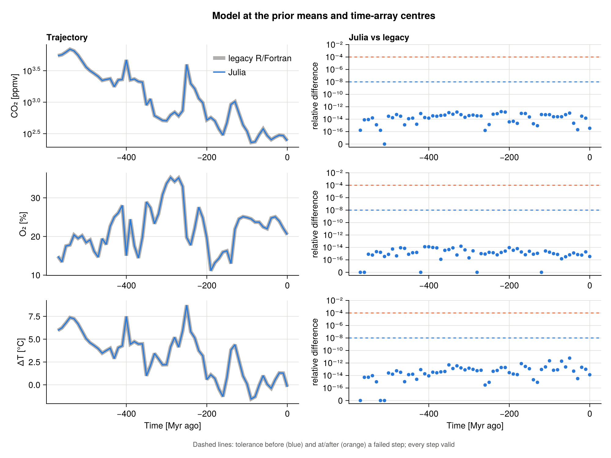
All samples: quantile bands of CO₂ and temperature (legacy filled, Julia as lines), and the share of valid steps at each age. The two should be indistinguishable.
comparison_figure(resB, :fig_ensemble)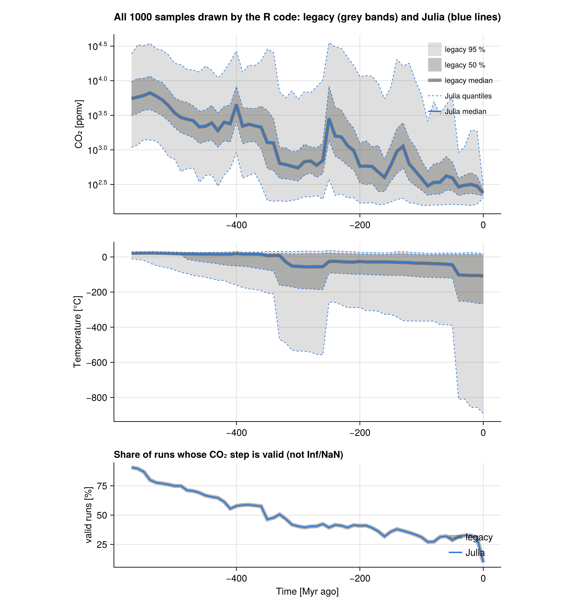
Every finite cell, Julia against legacy, coloured by region:
comparison_figure(resB, :fig_one_to_one)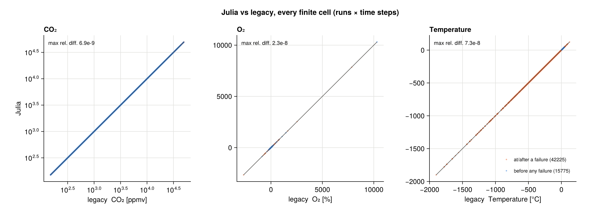
Distribution of the relative differences, with both tolerances. Many cells are exactly equal (leftmost bar):
comparison_figure(resB, :fig_histograms)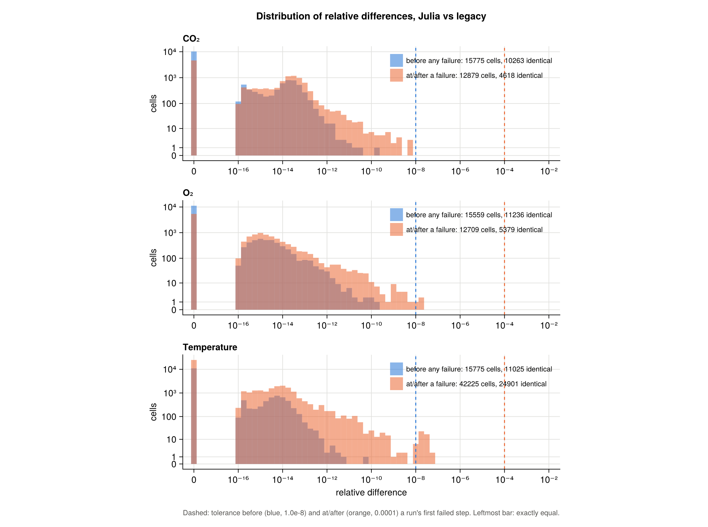
Where the differences are, per run and age. Failed steps are grey; the orange line marks each run's first failure. Larger differences sit to the right of it, which is finding F-08 made visible:
comparison_figure(resB, :fig_heatmaps)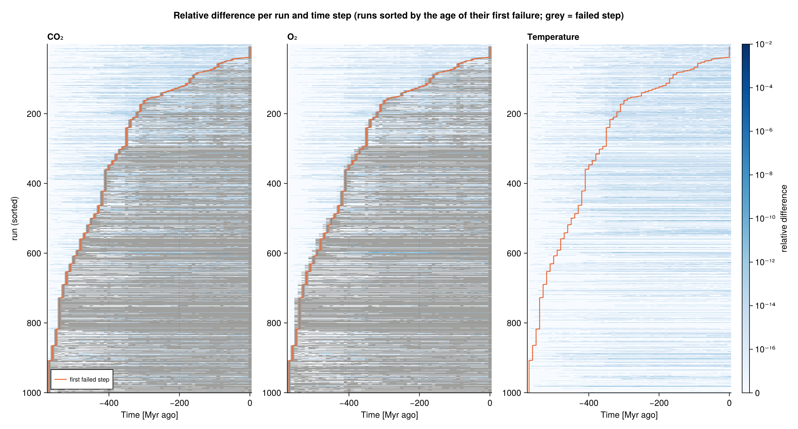
Largest and median difference at each age:
comparison_figure(resB, :fig_by_age)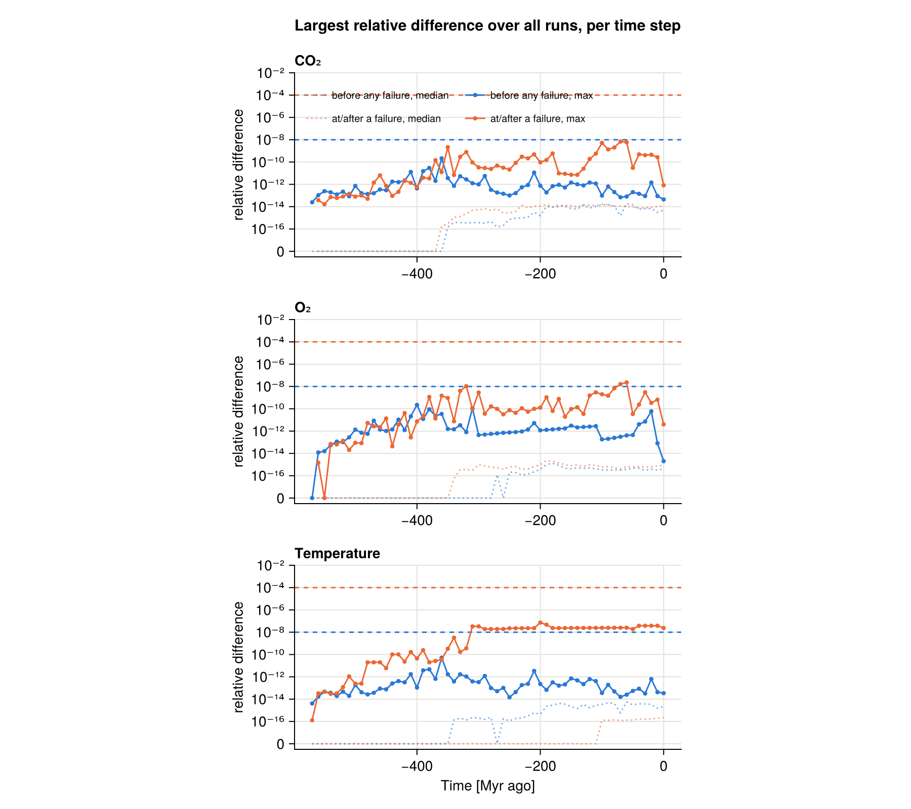
% outbound, which decides acceptance, must be identical for every run:
comparison_figure(resB, :fig_percent_outbound)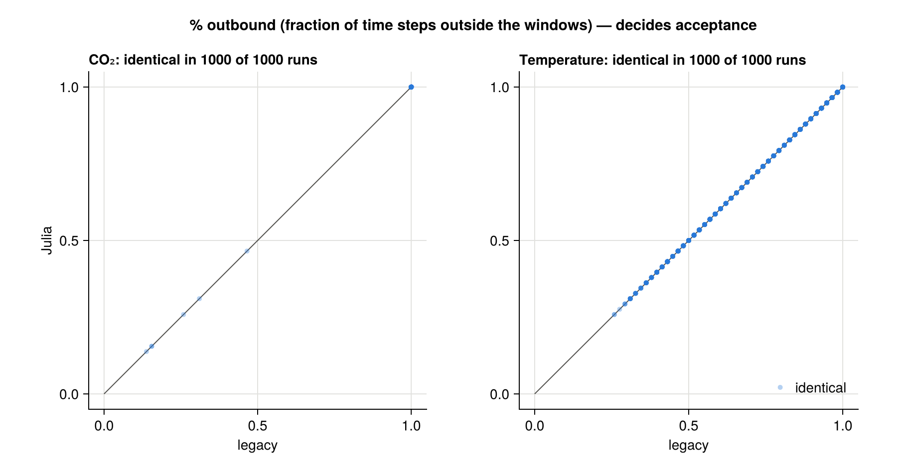
Single- against double-precision literals (finding F-05, section 1.9), against the legacy output:
comparison_figure(resB, :fig_literals)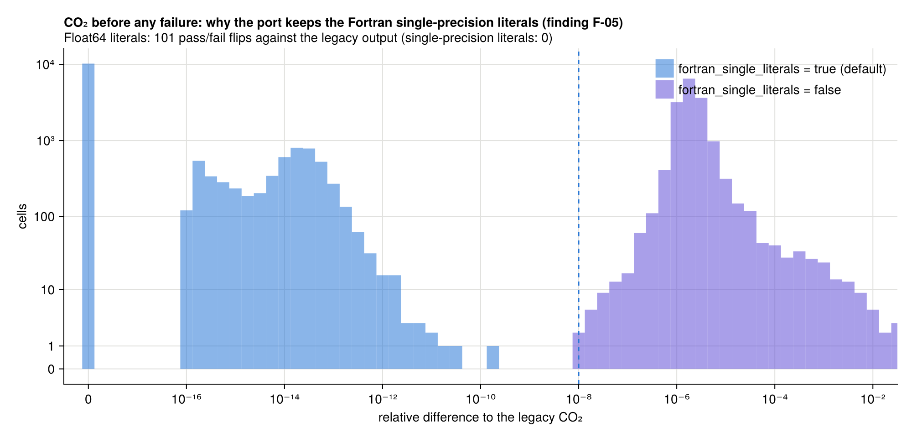
2.6 Level C: running the original code now
Level C runs the unmodified R/Fortran code (legacy/) through test/legacy_comparison/run_legacy.R into a temporary folder: 1000 prior samples drawn by the original R sampling code, and the six supplemental variants on 200 of them. Julia is then fed exactly those samples (R and Julia use different random number generators) and compared. If the Fortran libraries are not compiled yet, R compiles them (R CMD SHLIB) into legacy/fortran/. The R step takes under a minute; the comparison about two.
run_c = RUN_LEVEL_C === true || (RUN_LEVEL_C === :auto && level_c_possible(env))
resC = run_c ? run_live_legacy(env) : nothing
level_status(resC, :C, env, RUN_LEVEL_C)✅ Level C: all 84 checks pass in 1 s. Pass/fail positions identical in all 25 position checks; largest relative difference 2.24e-10 before a failure and 7.30e-08 at or after one. Report:
~\AppData\Local\Temp\jl_onRPUX\comparison_report.txt.
level_headroom(resC, "Level C: Julia against the original R/Fortran code, run now")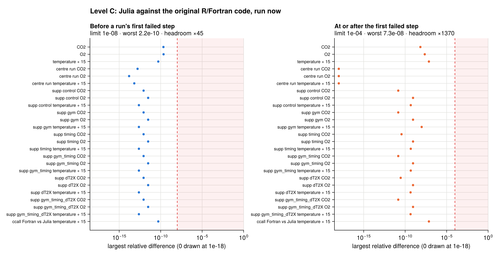
level_checks_table(resC, "level-C")All 84 level-C checks (click to expand)
| check | cells | largest rel. difference | tolerance | Inf/NaN mismatches | out of tolerance | |
|---|---|---|---|---|---|---|
| time-array centres (Goddéris, fAw/fA normalised) | 696 | 0 | 1.00e-08 | 0 | 0 | ✔ pass |
| time-array standard deviations | 696 | 0 | 1.00e-08 | 0 | 0 | ✔ pass |
| inverse-Wishart degrees of freedom | 12 | 0 | 0 | 0 | 0 | ✔ pass |
| CO2 windows | 116 | 0 | 1.00e-08 | 0 | 0 | ✔ pass |
| temperature windows | 116 | 0 | 1.00e-08 | 0 | 0 | ✔ pass |
| truncated-prior quantiles | 56000 | 1.12e-12 | 1.00e-08 | 0 | 0 | ✔ pass |
| CO2: pass/fail (Inf/NaN) positions | 58000 | 0 | identical | 0 | 0 | ✔ pass |
| CO2 [before any failure] | 15775 | 2.15e-10 | 1.00e-08 | 0 | 0 | ✔ pass |
| CO2 [at/after a failure] | 42225 | 6.85e-09 | 1.00e-04 | 0 | 0 | ✔ pass |
| O2: pass/fail (Inf/NaN) positions | 58000 | 0 | identical | 0 | 0 | ✔ pass |
| O2 [before any failure] | 15775 | 2.24e-10 | 1.00e-08 | 0 | 0 | ✔ pass |
| O2 [at/after a failure] | 42225 | 2.30e-08 | 1.00e-04 | 0 | 0 | ✔ pass |
| temperature + 15: pass/fail (Inf/NaN) positions | 58000 | 0 | identical | 0 | 0 | ✔ pass |
| temperature + 15 [before any failure] | 15775 | 5.14e-11 | 1.00e-08 | 0 | 0 | ✔ pass |
| temperature + 15 [at/after a failure] | 42225 | 7.30e-08 | 1.00e-04 | 0 | 0 | ✔ pass |
| % outbound CO2 | 1000 | 0 | 0 | 0 | 0 | ✔ pass |
| % outbound temperature | 1000 | 0 | 0 | 0 | 0 | ✔ pass |
| centre run CO2: pass/fail (Inf/NaN) positions | 58 | 0 | identical | 0 | 0 | ✔ pass |
| centre run CO2 [before any failure] | 58 | 1.64e-13 | 1.00e-08 | 0 | 0 | ✔ pass |
| centre run CO2 [at/after a failure] | 0 | 0 | 1.00e-04 | 0 | 0 | ✔ pass |
| centre run O2: pass/fail (Inf/NaN) positions | 58 | 0 | identical | 0 | 0 | ✔ pass |
| centre run O2 [before any failure] | 58 | 1.57e-14 | 1.00e-08 | 0 | 0 | ✔ pass |
| centre run O2 [at/after a failure] | 0 | 0 | 1.00e-04 | 0 | 0 | ✔ pass |
| centre run temperature + 15: pass/fail (Inf/NaN) positions | 58 | 0 | identical | 0 | 0 | ✔ pass |
| centre run temperature + 15 [before any failure] | 58 | 6.59e-14 | 1.00e-08 | 0 | 0 | ✔ pass |
| centre run temperature + 15 [at/after a failure] | 0 | 0 | 1.00e-04 | 0 | 0 | ✔ pass |
| supp control CO2: pass/fail (Inf/NaN) positions | 11600 | 0 | identical | 0 | 0 | ✔ pass |
| supp control CO2 [before any failure] | 3225 | 8.73e-13 | 1.00e-08 | 0 | 0 | ✔ pass |
| supp control CO2 [at/after a failure] | 8375 | 1.47e-11 | 1.00e-04 | 0 | 0 | ✔ pass |
| supp control O2: pass/fail (Inf/NaN) positions | 11600 | 0 | identical | 0 | 0 | ✔ pass |
| supp control O2 [before any failure] | 3225 | 3.09e-12 | 1.00e-08 | 0 | 0 | ✔ pass |
| supp control O2 [at/after a failure] | 8375 | 8.91e-10 | 1.00e-04 | 0 | 0 | ✔ pass |
| supp control temperature + 15: pass/fail (Inf/NaN) positions | 11600 | 0 | identical | 0 | 0 | ✔ pass |
| supp control temperature + 15 [before any failure] | 3225 | 2.38e-13 | 1.00e-08 | 0 | 0 | ✔ pass |
| supp control temperature + 15 [at/after a failure] | 8375 | 4.76e-10 | 1.00e-04 | 0 | 0 | ✔ pass |
| supp gym CO2: pass/fail (Inf/NaN) positions | 11600 | 0 | identical | 0 | 0 | ✔ pass |
| supp gym CO2 [before any failure] | 3194 | 8.73e-13 | 1.00e-08 | 0 | 0 | ✔ pass |
| supp gym CO2 [at/after a failure] | 8406 | 1.47e-11 | 1.00e-04 | 0 | 0 | ✔ pass |
| supp gym O2: pass/fail (Inf/NaN) positions | 11600 | 0 | identical | 0 | 0 | ✔ pass |
| supp gym O2 [before any failure] | 3194 | 3.09e-12 | 1.00e-08 | 0 | 0 | ✔ pass |
| supp gym O2 [at/after a failure] | 8406 | 8.91e-10 | 1.00e-04 | 0 | 0 | ✔ pass |
| supp gym temperature + 15: pass/fail (Inf/NaN) positions | 11600 | 0 | identical | 0 | 0 | ✔ pass |
| supp gym temperature + 15 [before any failure] | 3194 | 2.38e-13 | 1.00e-08 | 0 | 0 | ✔ pass |
| supp gym temperature + 15 [at/after a failure] | 8406 | 9.79e-09 | 1.00e-04 | 0 | 0 | ✔ pass |
| supp timing CO2: pass/fail (Inf/NaN) positions | 11600 | 0 | identical | 0 | 0 | ✔ pass |
| supp timing CO2 [before any failure] | 3227 | 8.73e-13 | 1.00e-08 | 0 | 0 | ✔ pass |
| supp timing CO2 [at/after a failure] | 8373 | 3.66e-11 | 1.00e-04 | 0 | 0 | ✔ pass |
| supp timing O2: pass/fail (Inf/NaN) positions | 11600 | 0 | identical | 0 | 0 | ✔ pass |
| supp timing O2 [before any failure] | 3227 | 3.09e-12 | 1.00e-08 | 0 | 0 | ✔ pass |
| supp timing O2 [at/after a failure] | 8373 | 8.91e-10 | 1.00e-04 | 0 | 0 | ✔ pass |
| supp timing temperature + 15: pass/fail (Inf/NaN) positions | 11600 | 0 | identical | 0 | 0 | ✔ pass |
| supp timing temperature + 15 [before any failure] | 3227 | 2.38e-13 | 1.00e-08 | 0 | 0 | ✔ pass |
| supp timing temperature + 15 [at/after a failure] | 8373 | 4.76e-10 | 1.00e-04 | 0 | 0 | ✔ pass |
| supp gym_timing CO2: pass/fail (Inf/NaN) positions | 11600 | 0 | identical | 0 | 0 | ✔ pass |
| supp gym_timing CO2 [before any failure] | 3237 | 8.73e-13 | 1.00e-08 | 0 | 0 | ✔ pass |
| supp gym_timing CO2 [at/after a failure] | 8363 | 1.47e-11 | 1.00e-04 | 0 | 0 | ✔ pass |
| supp gym_timing O2: pass/fail (Inf/NaN) positions | 11600 | 0 | identical | 0 | 0 | ✔ pass |
| supp gym_timing O2 [before any failure] | 3237 | 3.09e-12 | 1.00e-08 | 0 | 0 | ✔ pass |
| supp gym_timing O2 [at/after a failure] | 8363 | 8.91e-10 | 1.00e-04 | 0 | 0 | ✔ pass |
| supp gym_timing temperature + 15: pass/fail (Inf/NaN) positions | 11600 | 0 | identical | 0 | 0 | ✔ pass |
| supp gym_timing temperature + 15 [before any failure] | 3237 | 2.38e-13 | 1.00e-08 | 0 | 0 | ✔ pass |
| supp gym_timing temperature + 15 [at/after a failure] | 8363 | 4.76e-10 | 1.00e-04 | 0 | 0 | ✔ pass |
| supp dT2X CO2: pass/fail (Inf/NaN) positions | 11600 | 0 | identical | 0 | 0 | ✔ pass |
| supp dT2X CO2 [before any failure] | 3232 | 8.73e-13 | 1.00e-08 | 0 | 0 | ✔ pass |
| supp dT2X CO2 [at/after a failure] | 8368 | 2.90e-11 | 1.00e-04 | 0 | 0 | ✔ pass |
| supp dT2X O2: pass/fail (Inf/NaN) positions | 11600 | 0 | identical | 0 | 0 | ✔ pass |
| supp dT2X O2 [before any failure] | 3232 | 3.09e-12 | 1.00e-08 | 0 | 0 | ✔ pass |
| supp dT2X O2 [at/after a failure] | 8368 | 8.91e-10 | 1.00e-04 | 0 | 0 | ✔ pass |
| supp dT2X temperature + 15: pass/fail (Inf/NaN) positions | 11600 | 0 | identical | 0 | 0 | ✔ pass |
| supp dT2X temperature + 15 [before any failure] | 3232 | 2.38e-13 | 1.00e-08 | 0 | 0 | ✔ pass |
| supp dT2X temperature + 15 [at/after a failure] | 8368 | 4.51e-10 | 1.00e-04 | 0 | 0 | ✔ pass |
| supp gym_timing_dT2X CO2: pass/fail (Inf/NaN) positions | 11600 | 0 | identical | 0 | 0 | ✔ pass |
| supp gym_timing_dT2X CO2 [before any failure] | 3251 | 8.73e-13 | 1.00e-08 | 0 | 0 | ✔ pass |
| supp gym_timing_dT2X CO2 [at/after a failure] | 8349 | 1.47e-11 | 1.00e-04 | 0 | 0 | ✔ pass |
| supp gym_timing_dT2X O2: pass/fail (Inf/NaN) positions | 11600 | 0 | identical | 0 | 0 | ✔ pass |
| supp gym_timing_dT2X O2 [before any failure] | 3251 | 3.09e-12 | 1.00e-08 | 0 | 0 | ✔ pass |
| supp gym_timing_dT2X O2 [at/after a failure] | 8349 | 8.91e-10 | 1.00e-04 | 0 | 0 | ✔ pass |
| supp gym_timing_dT2X temperature + 15: pass/fail (Inf/NaN) positions | 11600 | 0 | identical | 0 | 0 | ✔ pass |
| supp gym_timing_dT2X temperature + 15 [before any failure] | 3251 | 2.38e-13 | 1.00e-08 | 0 | 0 | ✔ pass |
| supp gym_timing_dT2X temperature + 15 [at/after a failure] | 8349 | 4.51e-10 | 1.00e-04 | 0 | 0 | ✔ pass |
| ccall Fortran vs R .Fortran (CO2, bit for bit) | 58000 | 0 | 0 | 0 | 0 | ✔ pass |
| ccall Fortran vs Julia temperature + 15: pass/fail (Inf/NaN) positions | 58000 | 0 | identical | 0 | 0 | ✔ pass |
| ccall Fortran vs Julia temperature + 15 [before any failure] | 15775 | 5.14e-11 | 1.00e-08 | 0 | 0 | ✔ pass |
| ccall Fortran vs Julia temperature + 15 [at/after a failure] | 42225 | 7.30e-08 | 1.00e-04 | 0 | 0 | ✔ pass |
comparison_figure(resC, :fig_heatmaps)
2.7 Verdict
verdict_table([
("A: golden master", "stored output of the compiled Fortran", summarize_checks(golden)),
("B: replay", "stored exports of the R/Fortran code", isnothing(resB) ? nothing : summarize_checks(resB.checks)),
("C: live", "the R/Fortran code, run now", isnothing(resC) ? nothing : summarize_checks(resC.checks)),
])| level | compared against | result | checks passed | worst before a failure | worst at/after a failure |
|---|---|---|---|---|---|
| A: golden master | stored output of the compiled Fortran | ✔ pass | 63 / 63 | 1.41e-12 (limit 1.00e-08) | 3.71e-09 (limit 1.00e-04) |
| B: replay | stored exports of the R/Fortran code | ✔ pass | 84 / 84 | 2.24e-10 (limit 1.00e-08) | 7.30e-08 (limit 1.00e-04) |
| C: live | the R/Fortran code, run now | ✔ pass | 84 / 84 | 2.24e-10 (limit 1.00e-08) | 7.30e-08 (limit 1.00e-04) |
overall_verdict(test_results, golden, resB, resC)✅ Verified on this machine. The test groups (unit, io, sampling, constraints, workflow, regression, quality, doctests) pass, and the Julia port agrees with the original R/Fortran code within
test/tolerances.tomlat level(s) A, B, C: the same steps fail, % outbound is identical, and values agree to rounding error.
2.8 Reproducibility record
Versions and paths, for the record. The full text reports of levels B and C (comparison_report.txt, with the worst cells of every region) are in the folders printed here.
environment_table(env)| found | needed for | |
|---|---|---|
| Julia | 1.12.7 | ≥ 1.10 required; 1.12 recommended |
| Threads | 32 | |
| Operating system | NT x86_64 | |
| GeocarbPrecalibration | 0.1.0 (commit c29fe6d) | |
| CairoMakie | 0.15.17 | |
| Rscript | C:\Program Files\R\R-4.6.1\bin\Rscript.exe | level C |
| R packages lhs, CholWishart, abind, MASS | ✔ | level C |
| Compiled legacy Fortran | run_geocarb.dll, run_geocarb_supp.dll | level C (either this or a compiler) |
| Fortran compiler | C:\rtools45\x86_64-w64-mingw32.static.posix\bin\gfortran.exe | level C |
| Stored R exports | ✔ from 2026-11-20 14:56 | level B |
versioninfo()
println("\nGeocarbPrecalibration ", env.package, " at commit ", env.commit)
isnothing(resB) || println("level B report: ", resB.report)
isnothing(resC) || println("level C report: ", resC.report)
nothingJulia Version 1.12.7
Commit 6d172b025e (2026-08-15 08:05 UTC)
Build Info:
Official https://julialang.org release
Platform Info:
OS: Windows (x86_64-w64-mingw32)
CPU: 32 × Intel(R) Core(TM) i9-14900K
WORD_SIZE: 64
LLVM: libLLVM-18.1.7 (ORCJIT, alderlake)
GC: Built with stock GC
Threads: 32 default, 1 interactive, 32 GC (on 32 virtual cores)
GeocarbPrecalibration 0.1.0 at commit c29fe6d
level B report: ~\AppData\Local\Temp\jl_NcaFW6\comparison_report.txt
level C report: ~\AppData\Local\Temp\jl_onRPUX\comparison_report.txt
References
- Berner, R. A. (2004). The Phanerozoic Carbon Cycle: CO2 and O2. Oxford University Press.
- Foster, G. L., Royer, D. L., & Lunt, D. J. (2017). Future climate forcing potentially without precedent in the last 420 million years. Nature Communications 8, 14845.
- Mills, B. J. W., et al. (2019). Modelling the long-term carbon cycle, atmospheric CO2, and Earth surface temperature from late Neoproterozoic to present day. Gondwana Research 67, 172–186.
- Park, J., & Royer, D. L. (2011). Geologic constraints on the glacial amplification of Phanerozoic climate sensitivity. American Journal of Science 311, 1–26.
- Royer, D. L., et al. (2014). Error analysis of CO2 and O2 estimates from the long-term geochemical model GEOCARBSULF. American Journal of Science 314, 1259–1283.
- Wong, T. E., Cui, Y., Royer, D. L., & Keller, K. (2021). A tighter constraint on Earth-system sensitivity from long-term temperature and carbon-cycle observations. Nature Communications 12, 3173.